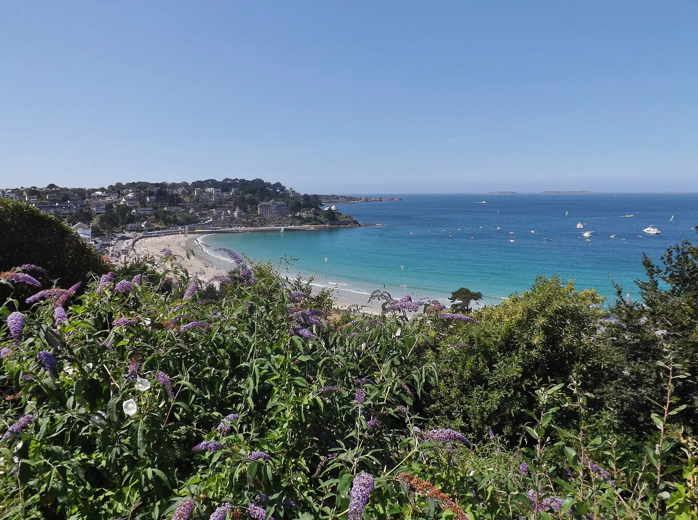

Perros-Guirec — Trestraou
Côtes-d'Armor, France · baignade, kayak, paddle, snorkeling

Porte de la Côte de Granit Rose : plage de Trestraou et sentier des douaniers vers Ploumanac’h, idéal kayak, paddle et baignade.
- Lieu
- Côtes-d'Armor, France
- Niveau
- Débutant
- Activités
- baignade, kayak, paddle, snorkeling
- Type d'eau
- Mer / océan
- Coordonnées
- 48.82, -3.45 (position approximative du secteur)
Dangers à connaître
- Chaos de rochers roses, attention à marée basse.
- Navettes vers les Sept-Îles.
Le conseil d'Ocean Buddy
En kayak, longe le granit rose jusqu’à Ploumanac’h.
Ouvrir dans Ocean Buddy Télécharger sur l'App Store
Source : Description historique Ocean Buddy · vérification externe en attente.